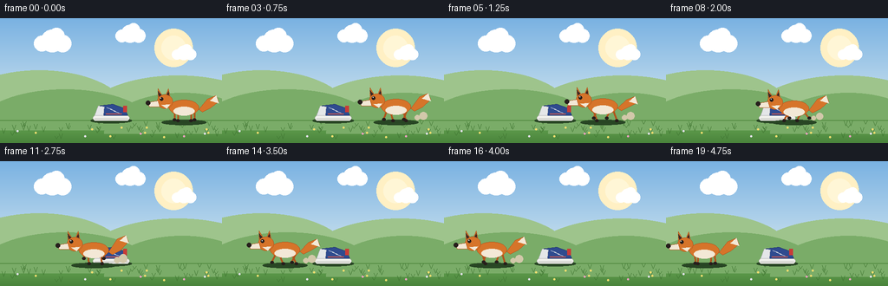
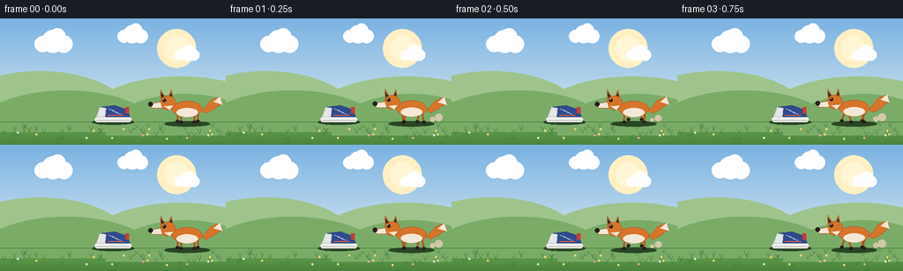

CODING AGENTS AS PIXEL WORLD MODELS
traex/Seed-2.1-Pro-0915 · dynamic_spatial_relationship_0029
点击播放 · 原生 RGB 像素
逐轮保存的候选
回放视频、检查图与代码变化。
每份候选均可单独播放。实际图片检查记录在下方工具轨迹中。
候选 01播放与检查图
点击播放 · 原生 RGB 像素


展开代码变化
--- 上一保存版本
+++ 本次保存版本
@@ -0,0 +1,250 @@
+"""Procedural text-to-video: a fox runs from the right of a shoe to its left.
+
+Renders 20 RGB frames (256x144 @ 4fps) entirely with PIL/numpy geometry.
+Each frame is drawn at 2x resolution and downsampled for smoother edges.
+"""
+import math
+import numpy as np
+from PIL import Image, ImageDraw
+
+import artifact_io
+
+W, H, N, FPS = 256, 144, 20, 4.0
+S = 2 # supersampling factor
+GROUND_Y = 118
+SHOE_X = 128
+
+# Palette
+SKY_TOP = (122, 178, 226)
+SKY_BOT = (214, 232, 240)
+HILL_FAR = (158, 196, 140)
+HILL_NEAR = (122, 172, 104)
+GRASS_TOP = (104, 166, 84)
+GRASS_BOT = (74, 132, 60)
+FOX_ORANGE = (214, 116, 42)
+FOX_DARK = (176, 84, 28)
+FOX_LIGHT = (243, 232, 214)
+BLACK = (38, 30, 28)
+
+
+def smoothstep(t):
+ return t * t * (3 - 2 * t)
+
+
+def make_background():
+ sw, sh = W * S, H * S
+ gy = GROUND_Y * S
+ # Sky gradient
+ top = np.array(SKY_TOP, dtype=np.float32)
+ bot = np.array(SKY_BOT, dtype=np.float32)
+ blend = np.linspace(0, 1, gy, dtype=np.float32)[:, None, None]
+ sky = top[None, None, :] * (1 - blend) + bot[None, None, :] * blend
+ # Ground gradient
+ gt = np.array(GRASS_TOP, dtype=np.float32)
+ gb = np.array(GRASS_BOT, dtype=np.float32)
+ blend2 = np.linspace(0, 1, sh - gy, dtype=np.float32)[:, None, None]
+ ground = gt[None, None, :] * (1 - blend2) + gb[None, None, :] * blend2
+ arr = np.concatenate([np.broadcast_to(sky, (gy, sw, 3)).copy(),
+ np.broadcast_to(ground, (sh - gy, sw, 3)).copy()], axis=0)
+ img = Image.fromarray(arr.astype(np.uint8), "RGB").convert("RGBA")
+ d = ImageDraw.Draw(img, "RGBA")
+
+ # Soft sun
+ d.ellipse([sw - 78 * S, 12 * S, sw - 34 * S, 56 * S], fill=(255, 240, 196, 150))
+ d.ellipse([sw - 70 * S, 20 * S, sw - 42 * S, 48 * S], fill=(255, 246, 214, 200))
+
+ # Clouds
+ for cx, cy, scale in [(60, 26, 1.0), (150, 18, 0.8), (212, 40, 0.65)]:
+ for dx, dy, r in [(0, 0, 13), (12, 3, 10), (-12, 3, 9), (5, -6, 9)]:
+ x = (cx + dx * scale) * S
+ y = (cy + dy * scale) * S
+ rr = r * scale * S
+ d.ellipse([x - rr, y - rr, x + rr, y + rr], fill=(255, 255, 255, 215))
+
+ # Rolling hills
+ d.chord([-60 * S, 60 * S, 150 * S, 168 * S], 180, 360, fill=HILL_FAR + (255,))
+ d.chord([90 * S, 66 * S, 320 * S, 176 * S], 180, 360, fill=HILL_FAR + (235,))
+ d.chord([-30 * S, 82 * S, 180 * S, 176 * S], 180, 360, fill=HILL_NEAR + (255,))
+ d.chord([120 * S, 86 * S, 300 * S, 180 * S], 180, 360, fill=HILL_NEAR + (235,))
+
+ # Horizon seam
+ d.line([(0, gy - 1), (sw, gy - 1)], fill=(84, 140, 66, 255), width=S)
+
+ # Grass tufts and tiny flowers (deterministic)
+ rng = np.random.default_rng(7)
+ for _ in range(46):
+ x = int(rng.integers(4, W - 4)) * S
+ y = int(rng.integers(GROUND_Y + 4, H - 4)) * S
+ h = int(rng.integers(3, 7)) * S
+ d.line([(x, y), (x - 2 * S, y - h)], fill=(62, 116, 48, 220), width=max(1, S // 2))
+ d.line([(x, y), (x + 2 * S, y - h)], fill=(62, 116, 48, 220), width=max(1, S // 2))
+ for _ in range(14):
+ x = int(rng.integers(6, W - 6)) * S
+ y = int(rng.integers(GROUND_Y + 8, H - 6)) * S
+ color = [(240, 220, 110), (235, 160, 190), (225, 225, 235)][int(rng.integers(0, 3))]
+ d.ellipse([x - S, y - S, x + S, y + S], fill=color + (230,))
+ return img
+
+
+BACKGROUND = make_background()
+
+
+def draw_shadow(d, cx, gy, half_w, alpha=90):
+ d.ellipse([cx - half_w * S, gy - 3 * S, cx + half_w * S, gy + 3 * S],
+ fill=(40, 70, 36, alpha))
+
+
+def draw_shoe(d, cx, gy):
+ """Side-view sneaker, stationary."""
+ x0, x1 = (cx - 21) * S, (cx + 21) * S
+ sole_top = (gy - 6) * S
+ sole_bot = gy * S
+ # Shadow
+ draw_shadow(d, cx * S, gy * S, 24, 80)
+ # Sole
+ d.rounded_rectangle([x0, sole_top, x1, sole_bot], radius=3 * S,
+ fill=(238, 238, 234), outline=(180, 180, 175), width=max(1, S // 2))
+ d.line([(x0 + 2 * S, sole_bot - 2 * S), (x1 - 2 * S, sole_bot - 2 * S)],
+ fill=(150, 150, 146), width=max(1, S // 2))
+ # Upper (navy)
+ upper = [(x0 + 2 * S, sole_top),
+ (x0 + 6 * S, (gy - 17) * S),
+ ((cx + 2) * S, (gy - 19) * S),
+ (x1 - 5 * S, (gy - 14) * S),
+ (x1 - 2 * S, sole_top)]
+ d.polygon(upper, fill=(47, 75, 143), outline=(32, 52, 104))
+ # Toe cap
+ d.polygon([(x0 + 2 * S, sole_top), (x0 + 6 * S, (gy - 17) * S),
+ ((cx - 8) * S, (gy - 16) * S), ((cx - 9) * S, sole_top)],
+ fill=(228, 230, 232), outline=(180, 182, 186))
+ # Heel tab
+ d.rectangle([x1 - 7 * S, (gy - 17) * S, x1 - 3 * S, (gy - 10) * S],
+ fill=(200, 60, 56))
+ # Accent stripe
+ d.line([((cx - 6) * S, (gy - 8) * S), ((cx + 12) * S, (gy - 8) * S)],
+ fill=(230, 92, 70), width=S)
+ # Laces
+ for k in range(3):
+ lx = (cx - 2 + k * 4) * S
+ ly = (gy - 15 + k * 2) * S
+ d.line([(lx - 3 * S, ly), (lx + 3 * S, ly + 2 * S)], fill=(245, 245, 245), width=max(1, S // 2))
+
+
+def draw_fox(d, cx, gy, phase, amp):
+ """Fox facing left, centered at cx, feet near gy. amp controls run intensity."""
+ cx, gy = cx * S, gy * S
+ bob = math.sin(phase * 2) * 1.6 * amp * S
+ by = gy - 15 * S + bob # body center y
+
+ # Shadow (does not bob)
+ draw_shadow(d, cx, gy + 2 * S, 26, 85)
+
+ # Tail (behind, sweeps to the right), swaying with the gait
+ sway = math.sin(phase * 0.9) * 3 * amp * S
+ tx = cx + 17 * S
+ ty = by - 2 * S
+ tail = [
+ (tx, ty + 4 * S),
+ (tx + 10 * S, ty - 8 * S + sway),
+ (tx + 20 * S, ty - 12 * S + sway),
+ (tx + 23 * S, ty - 5 * S + sway),
+ (tx + 14 * S, ty + 2 * S),
+ (tx + 4 * S, ty + 7 * S),
+ ]
+ d.polygon(tail, fill=FOX_ORANGE, outline=FOX_DARK)
+ # White tail tip
+ d.polygon([(tail[1][0] + 3 * S, tail[1][1] + 2 * S),
+ (tail[2][0], tail[2][1]),
+ (tail[3][0], tail[3][1] + 2 * S)], fill=FOX_LIGHT)
+
+ # Legs (trot: diagonal pairs share a phase)
+ leg_w = max(2, int(2.2 * S))
+ hip_y = by + 5 * S
+ pairs = [ # hip x offset, phase offset
+ (-11, 0.0), (-7, math.pi), (8, math.pi), (12, 0.0),
+ ]
+ for hx_off, poff in pairs:
+ ph = phase + poff
+ swing = math.sin(ph) * 6 * amp * S
+ lift = max(0.0, math.cos(ph)) * 6 * amp * S
+ hip_x = cx + hx_off * S
+ foot_x = hip_x + swing
+ foot_y = gy - lift
+ d.line([(hip_x, hip_y), (foot_x, foot_y)], fill=FOX_DARK, width=leg_w)
+ # Paw
+ d.ellipse([foot_x - 1.6 * S, foot_y - 1.4 * S,
+ foot_x + 2.4 * S, foot_y + 1.6 * S], fill=BLACK)
+
+ # Body
+ d.ellipse([cx - 17 * S, by - 9 * S, cx + 17 * S, by + 9 * S],
+ fill=FOX_ORANGE, outline=FOX_DARK, width=max(1, S // 2))
+ # Cream belly
+ d.ellipse([cx - 12 * S, by - 1 * S, cx + 12 * S, by + 9 * S], fill=FOX_LIGHT)
+
+ # Head (front, left side)
+ hx, hy = cx - 22 * S, by - 7 * S
+ # Ears
+ for ex, lean in [(-5, -3), (3, 1)]:
+ base = [(hx + (ex - 3) * S, hy - 5 * S),
+ (hx + (ex + 3) * S, hy - 5 * S),
+ (hx + (ex + lean) * S, hy - 15 * S)]
+ d.polygon(base, fill=FOX_ORANGE, outline=FOX_DARK)
+ inner = [(base[0][0] + S, base[0][1] - S),
+ (base[1][0] - S, base[1][1] - S),
+ (base[2][0], base[2][1] + 3 * S)]
+ d.polygon(inner, fill=(60, 40, 36))
+ # Skull
+ d.ellipse([hx - 9 * S, hy - 8 * S, hx + 9 * S, hy + 8 * S],
+ fill=FOX_ORANGE, outline=FOX_DARK, width=max(1, S // 2))
+ # Snout pointing left
+ snout = [(hx - 8 * S, hy - 1 * S), (hx - 20 * S, hy + 1 * S),
+ (hx - 18 * S, hy + 6 * S), (hx - 6 * S, hy + 6 * S)]
+ d.polygon(snout, fill=FOX_LIGHT, outline=FOX_DARK)
+ d.ellipse([hx - 22 * S, hy - 1 * S, hx - 17 * S, hy + 4 * S], fill=BLACK)
+ # Cheek fluff and eye
+ d.polygon([(hx - 4 * S, hy + 4 * S), (hx + 2 * S, hy + 8 * S),
+ (hx + 6 * S, hy + 3 * S)], fill=FOX_LIGHT)
+ d.ellipse([hx - 6 * S, hy - 5 * S, hx - 2 * S, hy - 1 * S], fill=BLACK)
+ d.ellipse([hx - 5.2 * S, hy - 4.4 * S, hx - 4.2 * S, hy - 3.4 * S],
+ fill=(255, 255, 255))
+
+
+def render_frame(i):
+ t = i / (N - 1)
+ s = smoothstep(t)
+ # From clearly right of the shoe to clearly left
+ fox_x = 212 - (212 - 44) * s
+ # Gait amplitude follows velocity so the fox eases into and out of the run
+ velocity = 4 * t * (1 - t)
+ amp = 0.12 + 0.88 * velocity
+ phase = i * 1.7
+
+ img = BACKGROUND.copy()
+ d = ImageDraw.Draw(img, "RGBA")
+ draw_shoe(d, SHOE_X, GROUND_Y)
+
+ # Light dust puffs trailing the fox (it moves left, puffs on its right)
+ if amp > 0.25:
+ puff_phase = (phase % (2 * math.pi)) / (2 * math.pi)
+ for k in range(2):
+ pp = (puff_phase + k * 0.5) % 1.0
+ px = fox_x + 20 + pp * 14
+ py = GROUND_Y - 2 - pp * 4
+ r = (2 + pp * 3) * S
+ alpha = int(110 * (1 - pp) * amp)
+ d.ellipse([px * S - r, py * S - r, px * S + r, py * S + r],
+ fill=(210, 200, 170, alpha))
+
+ draw_fox(d, fox_x, GROUND_Y, phase, amp)
+ out = img.convert("RGB").resize((W, H), Image.Resampling.LANCZOS)
+ return np.asarray(out, dtype=np.uint8)
+
+
+def main():
+ frames = np.stack([render_frame(i) for i in range(N)], axis=0)
+ artifact_io.save(frames, ".")
+ print(f"Saved {frames.shape} frames")
+
+
+if __name__ == "__main__":
+ main()
可观测工具轨迹
实际执行的命令与返回图片。
命令 1exit 0
/bin/bash -lc 'cat prompt.txt GENERATION_RULES.md task_spec.json 2>/dev/null; ls -la'
命令 2exit 0
/bin/bash -lc 'cat artifact_io.py'
命令 3exit 0
/bin/bash -lc 'cd "$(pwd)" && python generate.py && ls -la frames | head -6 && ls -la pixels.npz inspection.png index.html'
保存候选 1 份；完成命令 3 次；可验证图片返回 0 张。原始 API 响应与完整日志保留在本地。